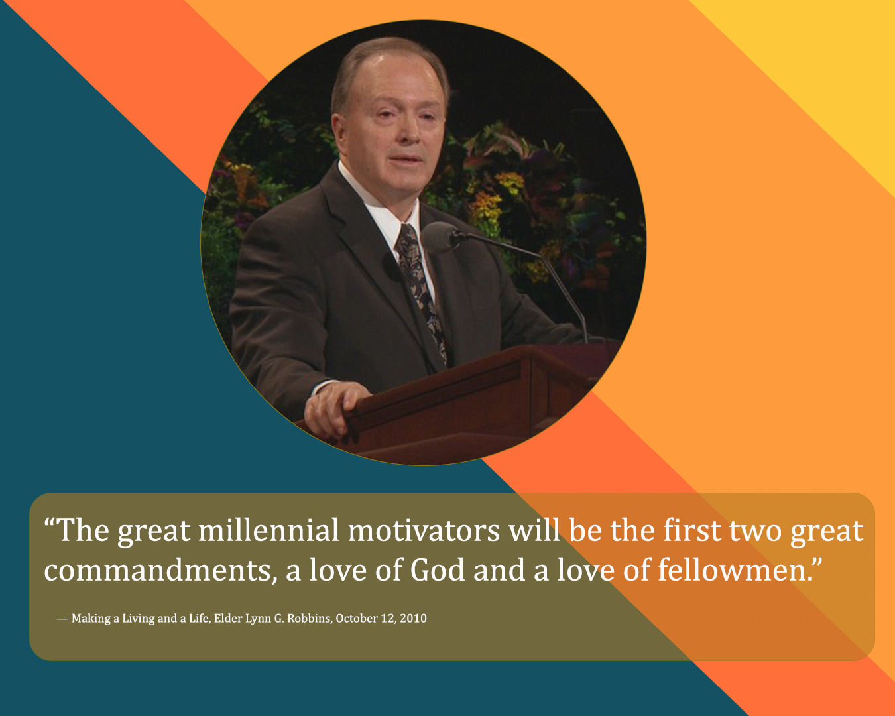
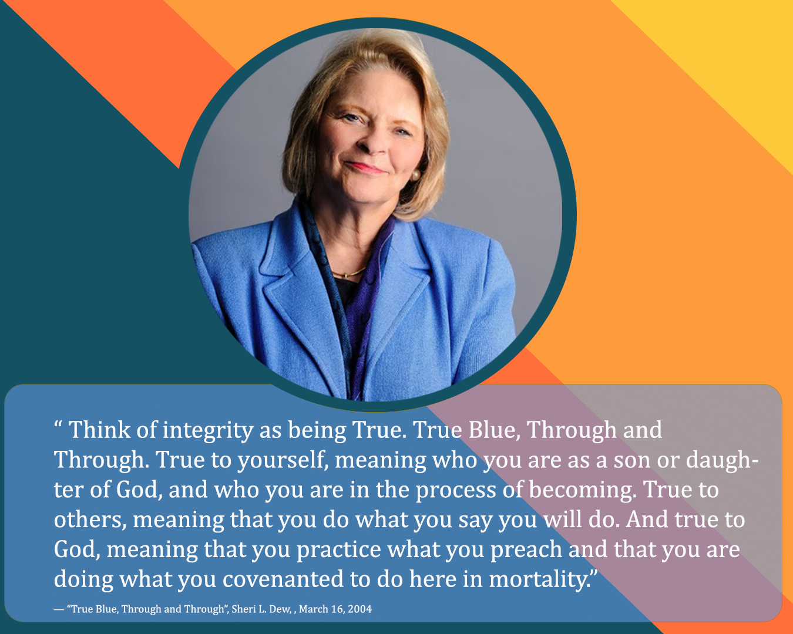
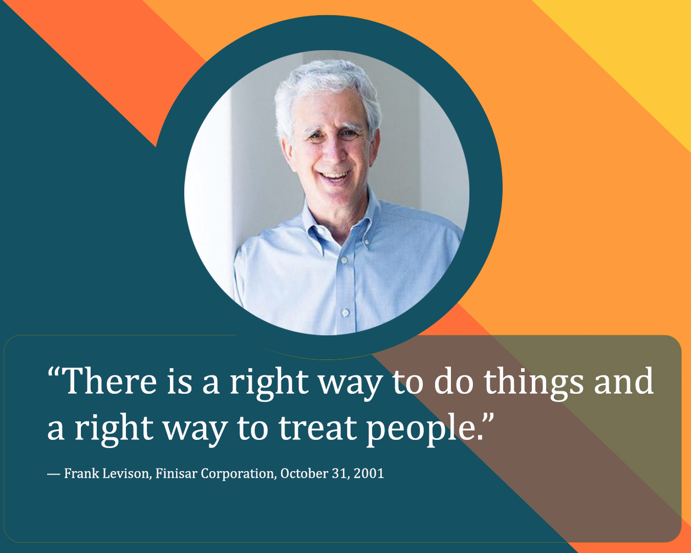
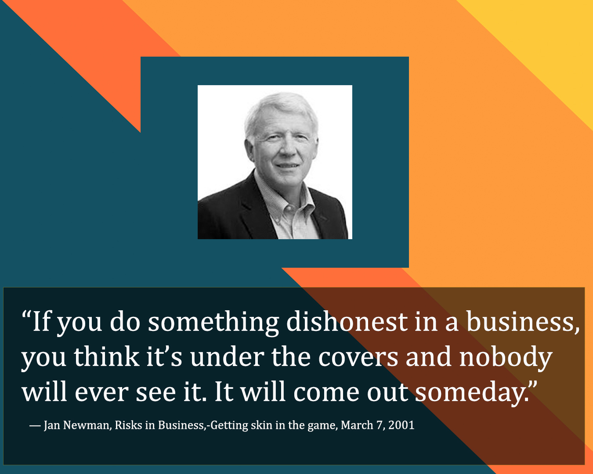
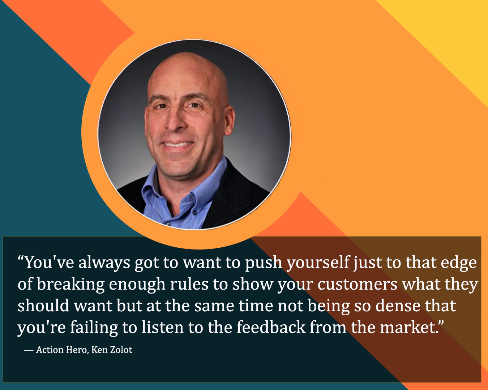
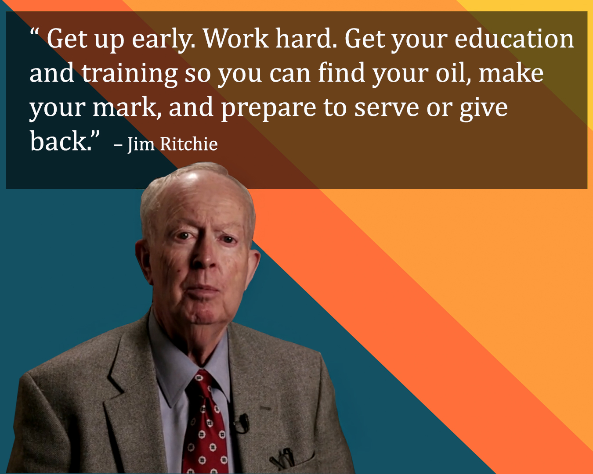

Week 03 – Journal Entry
Making a Living and a Life
This week I studied honesty and business ethics by watching the talk Making a Living and a Life by Elder Lynn G. Robbins, given on October 12, 2010. In this message, Elder Robbins teaches that how and why we make a living matters far more than how much we earn. Work is part of God’s plan not only to provide for our needs, but to shape our character, integrity, and love for others.
He explains that Satan often uses competition, comparison, pride, and materialism, especially in the workplace, to pull people away from God. When success is measured by having more than others, people begin to lose sight of what truly matters. Money itself is not evil, but when the love of money replaces love for God and love for others, it leads to selfishness, dishonesty, and harm.
To help us evaluate our motives, Elder Robbins presents different levels of motivation. At the A-level, love for God and love for others come first, and earning an income comes second. People at this level are honest, fair, and generous, and they use their talents to bless others. They do not just make a living; they make a meaningful life. At the B-level, money becomes the primary focus, but there is still some concern for others. At the C-level, the love of money takes over, and people become indifferent to those they serve. At the D and F levels, profit is gained through harm, deception, or actions that damage individuals and society.
Elder Robbins teaches that every profession can be lived at any of these levels. What matters most to the Lord is not the job we have or how much we earn, but whether we are honest in our dealings, kind to others, and willing to serve. The Savior’s teaching to treat others as we would like to be treated is the foundation of lasting success and true happiness.
In the end, Elder Robbins reminds us that people are our true responsibility. Life is preparing us for a final spiritual accounting, and the most important question will not be about our careers, but about how we loved, served, and followed Christ while making our living.
True Blue, Through and Through
I enjoyed reading Sister Sheri L. Dew’s talk, “True Blue, Through and Through.” She teaches that integrity is the foundation of character and the key to happiness, trust, and spiritual success. Integrity means being true to yourself, true to others, and true to God. It is more than honesty, and even small compromises can quickly grow into larger sins.
Sister Dew contrasts the example of the Stripling Warriors, who kept their covenants with exactness, with her own story of ignoring a stop sign and seeing how easily integrity can be lost. She also references prophets from the past and present, including Joseph, Job, Paul, Joseph Smith, Ezra Taft Benson, and Gordon B. Hinckley, to show that integrity is timeless and essential.
Integrity builds trust in relationships, families, and leadership. Without it, trust and faith cannot exist. Because the world is filled with pressure and moral challenges, she encourages us to strengthen our integrity.
She suggests seven ways to do this. First, decide to be trustworthy. Second, have faith in the Lord and seek His help. Third, keep your covenants. Fourth, stand up for what you believe. Fifth, expect tests of integrity. Sixth, do not give up and repent when needed. Seventh, renew your covenant with God and fulfill your divine purpose.
She concludes by inviting everyone to do a personal integrity check and to become true blue, through and through.
Why are Ethics Important?
In the video “Why are Ethics Important?”, Frank Levinson explains that ethics are essential in business because they build trust and protect the company. He shares a personal story where he hired a dishonest CFO who falsely accused him of stealing money, which caused him to lose his job. This experience taught him that even if someone seems smart or loyal, dishonesty can destroy everything. Therefore, he believes businesses must be “fanatically ethical” and never compromise their values. When a company is ethical, it attracts the best people and creates a strong, respectful work environment.
Top 10 Must Have For a Start-up
The Top 10 Must Haves for a Startup video contains valuable lessons about focusing on customers, staying lean, and building a strong business foundation. It teaches that a successful startup does not need fancy furniture, expensive marketing, or complicated plans. What it really needs is a clear focus on real customers, real sales, and continuous innovation. Levinson explains that limited resources can actually help a company grow because they force creativity and smart decision making. He also emphasizes the importance of staying close to customers, listening to their feedback, and adapting quickly to meet their needs. Finally, he highlights the need for strong partnerships and strong values because building a business requires loyalty, hard work, and the ability to keep going even when things are difficult.
Risks in Business
The video Risks in Business, Jan Newman, shared a powerful lesson about what it takes to succeed in business. He explained that when someone invests in your company, you have to be ready for responsibility and accountability. Newman told a story about receiving $2.5 million from an investor with just a handshake. The business started well, but then it went through a downturn. Instead of giving more money, the investor challenged him to find a solution and asked him to invest his own money.
This taught Newman the importance of having skin in the game. When he put in $60,000 of his own money, he became more committed and determined to make the business work. He learned that when people are personally invested, they become more aligned with the company’s goals and are willing to work harder to help it succeed.
He also emphasized the importance of honesty. He warned that dishonest actions will eventually be discovered and can lead to serious consequences. The main lesson is that success in business requires accountability, commitment, hard work during difficult times, and integrity.
Action Hero Ken Zolot
Ken Zolot taught that entrepreneurship is about using curiosity and restlessness as strengths, even when they feel like weaknesses. He showed that courage is needed to move forward, even when you are unprepared. He also emphasized that business is built on people, relationships, and accountability, not just technology or ideas. Entrepreneurs must always ask “Who cares?” to make sure their idea solves a real problem for real people. Finally, he taught that innovation requires balancing bold vision with listening to feedback and understanding the market.
The Formula and Happiness
I loved the reading The Formula and Happiness, where Jim Ritchie teaches that true success and lasting happiness come from combining hard work, preparation, purpose, and service. He explains that success begins with simple but powerful habits such as getting up early and working diligently, along with gaining education and becoming excellent at something. He also introduces the idea of finding your “oil,” which represents what you love and your purpose, the talents, passions, or opportunities that allow your efforts to grow and multiply. What stood out to me most is his teaching that real joy does not come from success alone, but from using your oil and your achievements to serve and give back to others. The message shows that when what you love, what you are good at, and how you serve are aligned, life becomes more meaningful and truly fulfilling.
Magdalena Yesil’s case
This week I also had the opportunity to study and learn from Magdalena Yesil’s case. It was interesting yet challenging, but I really enjoyed reading her story. What stood out to me the most was how she never stopped learning, even after achieving success. She kept growing, exploring new opportunities, and pushing herself to improve. I also loved how her story showed that success is not only about money or power. She had to choose between independence and more stability, and I could feel how real and difficult that decision was. Her story made me think about my own goals and what I truly want in life. It reminded me that success is not only about reaching goals, but about choosing a path that fits my values and brings me joy.
Life Plan Personal Code of Conduct
I had the opportunity to write my personal code of conduct, and it was a meaningful moment of reflection for me. As I wrote my “I will never” and “I will always” statements, I felt a strong reminder of the values that matter most in my life. This activity helped me think deeply about my faith, my family, and the kind of example I want to be for my children. I realized that setting clear boundaries is not about rules, but about protecting my character and staying true to who I am. I feel grateful for this chance to pause, reflect, and strengthen my commitment to living with integrity, purpose, and love.
Conclusion
This week was busy, but I learned a lot. I realized that true success is not measured by money or status, but by integrity, purpose, and service. Whether we are building a business, making important life choices, or simply living day to day, the way we act and the values we choose matter most. I learned that honesty and ethical behavior are the foundation of trust, and that when we align our talents and goals with love for others and faith in God, we can create a meaningful life and not just a living.